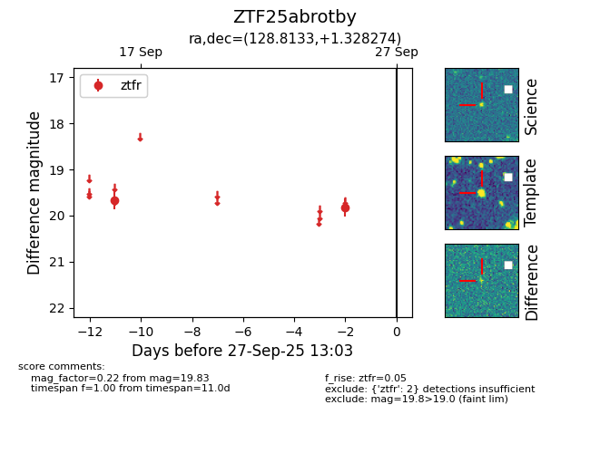

FINK: ZTF25abrotby
Lasair: ZTF25abrotby
ALeRCE: ZTF25abrotby
ZTF25abrotby (ztf,fink)
equatorial (ra, dec) = (128.8133,+1.32827)
galactic (l, b) = (224.1864,+23.57606)

last ztfr=19.83
2 ztfr detections